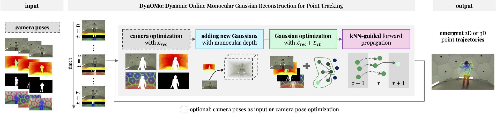

We present DynOMo for the task of monocular online point tracking from pose-free videos through joint 3D reconstruction and camera localization based on a dynamic 3D Gaussian representation. We visualize DynOMo's emergent trajectories on ground truth RGB videos.
Reconstructing scenes and tracking motion are two sides of the same coin. Tracking points allow for geometric reconstruction, while geometric reconstruction of (dynamic) scenes allows for 3D tracking of points over time. The latter was recently also exploited for 2D point tracking to overcome occlusion ambiguities by lifting tracking directly into 3D. However, above approaches either require offline processing or multi-view camera setups both unrealistic for real-world applications like robot navigation or mixed reality. We target the challenge of online 2D and 3D point tracking from unposed monocular camera input introducing Dynamic Online Monocular Reconstruction (DynOMo). We leverage 3D Gaussian splatting to reconstruct dynamic scenes in an online fashion. Our approach extends 3D Gaussians to capture new content and object motions while estimating camera movements from a single RGB frame. DynOMo stands out by enabling emergence of point trajectories through robust image feature reconstruction and a novel similarity-enhanced regularization term, without requiring any correspondence-level supervision. It sets the first baseline for online point tracking with monocular unposed cameras, achieving performance on par with existing methods. We aim to inspire the community to advance online point tracking and reconstruction, expanding the applicability to diverse real-world scenarios.

Our pipeline assumes an input video sequence, (predicted) depth maps, sparse segmentation masks as well as image features as input. Building on top of [1, 2], we combine the powerful 3DGS-based dynamic scene representation and the flexible online tracking paradigm for pose-free videos through simultaneous scene reconstruction and camera localization. The key to DynOMo’s performance lies in three technical adaptions for the online tracking setting, namely, 1) reconstruction signal enhancement with stronger image features and depth supervisions, 2) semantic-based foreground and background separation to enable camera tracking, and 3) motion regularization bootstrapping via a feature-similarity-guided weighting mechanism. The above figure pictures an overview of our online reconstruction pipeline. We optimize for the camera pose C, add a set of new Gaussians based on the densification concept [1], optimize all Gaussians together and forward propagate G and C. Finally, we directly extract 3D point trajectories from single Gaussians Gp and project them to the image plane to obtain 2D trajectories.
We visualize the comparison between 2D tracks from SpaTracker [3] as it is the state-of-the-art method and Omnimotion [4] since it is another optimization-baed approach. While SpaTracker was trained on trajectories and Omnimotion requires heavily preprocessed flow as input and is offline optimized, DynOMo is able to generate emergent trajectories.
We visualize the comparison between 2D and 3D Tracking of Shape of Motion [6] and TAPIR [5] (both visualizations from Shape of Motion) DynOMo. While TAPIR was trained on trajectory data and Shape of Motion requires TAPIR 2D tracks as input and is optimized in an offline manner, DynOMo obtains 2D and 3D tracks in an emergent manner. Due to the nature of the Gaussians, Gaussians that represent non-rigid objects move slightly over time.
DynOMo struggles with extreme camera motion and camera rotation as well as extreme camera acceleration. Additionally, extreme occlusions especially close to the camera break the camera pose optimization as well as the reconstruction.
@inproceedings{som2024,
title = {DynOMo: Online Point Tracking by Dynamic Online Monocular Gaussian Reconstruction},
author = {Jenny Seidenschwarz, Qunjie Zhou, Bardienus Duisterhof, Deva Ramanan, Laura Leal{-}Taix{\'{e}}},
journal = {3DV},
year = {2025}
}